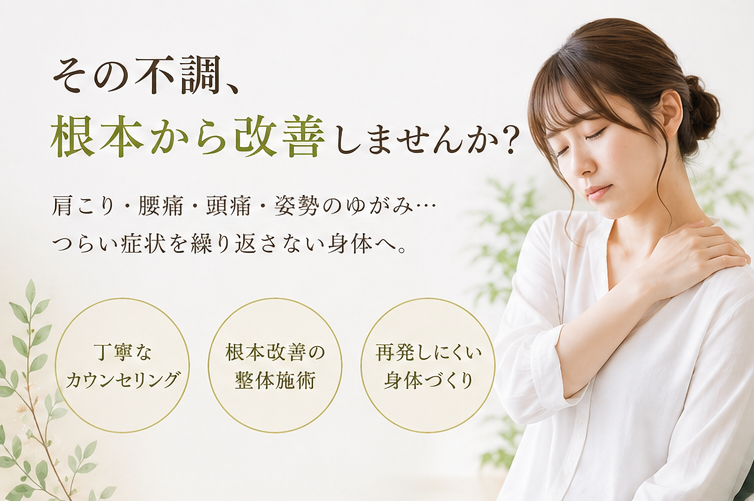
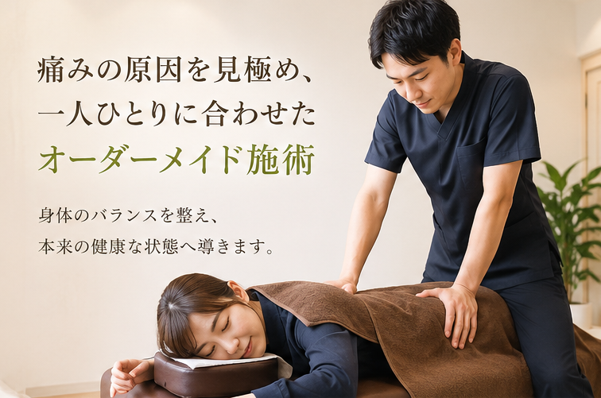
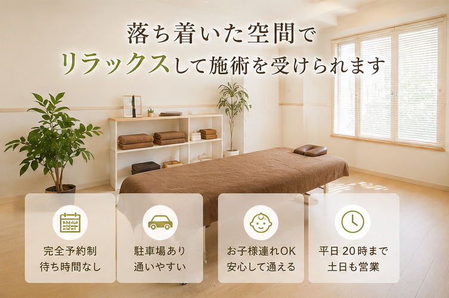
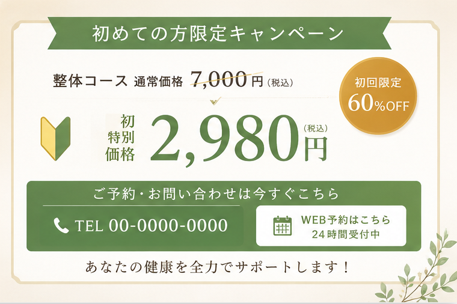

肩こり
首から肩が重く、夕方になると集中力が落ちる。

本日受付中
平日20時まで、土日も営業 LINE・Web予約は24時間受付For desk workers
凛整体院は、痛い場所だけを揉むのではなく、姿勢の崩れ、関節の動き、呼吸、日常動作まで確認します。広告から来た方にも不安なく判断していただけるよう、初回はカウンセリングと検査の時間をしっかり確保しています。
お悩み
症状名だけで判断せず、身体全体のつながりから原因を探します。
首から肩が重く、夕方になると集中力が落ちる。
座りっぱなしや立ち上がりで腰に不安がある。
首こりや眼精疲労と一緒に頭が重くなる。
写真で見ると背中が丸く、呼吸も浅く感じる。
骨盤や肩の高さが左右で違い、疲れやすい。
眠りが浅い、緊張が抜けない、休んでも疲れる。
なぜ改善しないのか
肩こりや腰痛は、痛みのある場所だけで起きているとは限りません。骨盤の傾き、胸郭の硬さ、首の使い方、仕事中の姿勢が重なって、同じ場所へ負担が戻ります。

選ばれる理由
身体の構造を理解した施術者が、検査から施術計画まで担当します。
待ち時間を抑え、落ち着いた空間で相談と施術に集中できます。
年齢、仕事、姿勢、既往歴を踏まえ、その日の状態に合わせます。
その場の変化だけでなく、戻りにくい身体づくりまで伴走します。
セルフケアや仕事中の姿勢など、日常で続けやすい方法を共有します。

Comfortable care
施術の流れ
症状の経緯、病院での検査、生活習慣、仕事中の姿勢を伺います。
姿勢、関節の可動域、筋肉の緊張、痛みが出る動作を確認します。
身体への負担を抑えながら、必要な部位へ的確にアプローチします。
施術後の変化を確認し、自宅でできるケアと通院目安をお伝えします。
お客様の声
公開時は実際のお客様写真と許諾済みコメントへ差し替えてください。
★★★★★
デスクワーク後のつらさが続いていましたが、姿勢のクセまで説明してもらえて納得できました。
40代 女性・事務職★★★★★
揉むだけではなく、立ち方や座り方まで見てもらえたのが良かったです。
50代 男性・営業職★★★★★
院内が落ち着いていて、周りを気にせず悩みを話せました。説明も丁寧でした。
30代 女性・在宅勤務ビフォーアフター
巻き肩と頭の位置を確認し、首肩への負担軽減を目指します。
骨盤と股関節の動きから、立ち上がり時の不安を見直します。
胸郭、肩甲骨、首の動きを整え、デスクワーク疲れに対応します。
院長紹介
はじめまして。凛整体院 院長の高橋です。これまで慢性痛で悩む方の身体を見てきた中で、痛みのある場所だけでなく、生活全体を見る重要性を感じてきました。
First visit campaign
初回はカウンセリング、検査、施術、アフターケアまで含めてご案内します。

よくある質問
当院は自費整体を中心に行っています。保険適用の可否が気になる方は、症状の経緯をお電話でご相談ください。
動きやすいお着替えをご用意しています。ご自身で持参いただいても問題ありません。
状態や生活習慣により異なります。初回検査後に、無理のない通院目安をご提案します。
はい。刺激量を確認しながら進めます。痛みを我慢する施術は行いません。
予約状況により対応できます。ご予約時にお子様連れの旨をお知らせください。
空きがある場合は可能です。電話、LINE、Web予約から空き状況をご確認ください。
アクセス
Reserve today
初回はお悩みの背景を伺い、身体の状態を確認したうえで施術します。無理な勧誘は行いません。